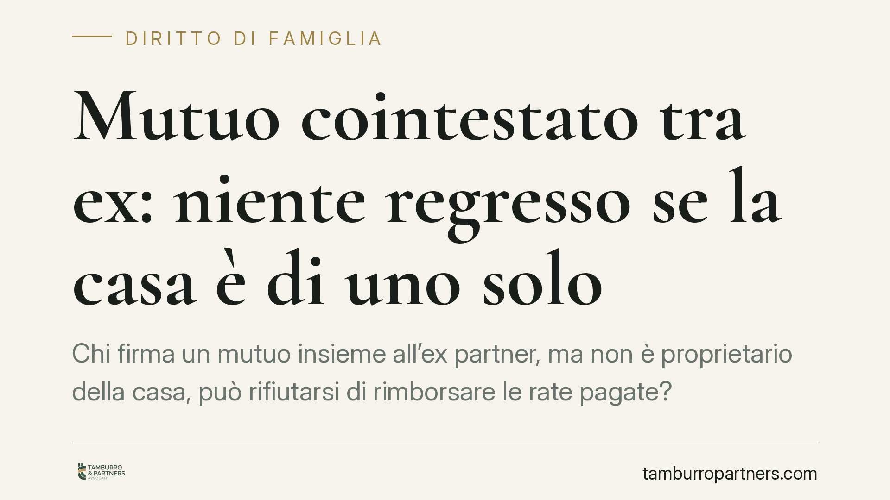

Mutuo cointestato tra ex: niente regresso se la casa è di uno solo
Chi firma un mutuo insieme all'ex partner, ma non è proprietario della casa, può rifiutarsi di rimborsare le rate pagate? Il Tribunale di Palermo risponde di sì: se la cointestazione serve solo come garanzia per il vero proprietario, non scatta il diritto di regresso. Una decisione che tocca molte coppie separate alle prese con finanziamenti condivisi.

Il caso
Due ex coniugi avevano acceso insieme un mutuo presso la banca. L'immobile acquistato, però, era di proprietà esclusiva della moglie. Dopo la separazione, l'ex marito aveva continuato per un periodo a versare parte delle rate e chiedeva ora alla donna la restituzione delle somme, invocando il principio secondo cui chi paga un debito comune può rivalersi sugli altri condebitori.
Il Tribunale di Palermo, Seconda Sezione civile, ha respinto la domanda. La cointestazione del mutuo, in questo caso, non rifletteva una contitolarità del debito nei rapporti interni, ma rappresentava una semplice garanzia prestata nell'esclusivo interesse della vera proprietaria dell'immobile.
Inquadramento normativo
Il punto di riferimento è l'art. 1298 del Codice civile, che disciplina i rapporti interni tra condebitori in solido. La norma stabilisce che, salvo patto contrario, l'obbligazione in solido si divide tra i debitori e che le parti si presumono uguali, "se non risulta diversamente".
Proprio quell'inciso — "se non risulta diversamente" — è il perno della decisione. La presunzione di parità non è assoluta: cede davanti alla prova che il debito, nei rapporti interni, gravava in realtà su uno solo dei coobbligati.
Il Tribunale ha ritenuto che la destinazione del finanziamento — l'acquisto di una casa divenuta di proprietà esclusiva della moglie — fosse elemento sufficiente a superare la presunzione. In sostanza: il debito, sul piano sostanziale, era di chi ha acquistato il bene. L'altro coniuge figurava nel contratto solo per rafforzare la posizione della banca, non perché destinatario economico del prestito.
Cosa significa in concreto
La distinzione centrale è tra titolarità formale e titolarità sostanziale del debito.
Verso la banca, entrambi i cointestatari restano obbligati in solido: l'istituto può pretendere l'intera rata da ciascuno, indifferentemente. Questo non cambia. La cointestazione resta pienamente efficace nel rapporto esterno con il creditore.
Ciò che cambia è il rapporto interno tra gli ex. Chi ha pagato pur non essendo proprietario non ha automaticamente diritto a farsi rimborsare, se emerge che la sua firma serviva solo da garanzia per l'altro.
La conseguenza pratica è rilevante per molte coppie: aver versato rate durante o dopo la convivenza non genera, di per sé, un credito verso l'ex. Occorre guardare a chi ha acquistato il bene, con quali intese le parti avevano regolato il finanziamento e a quale titolo sono avvenuti i pagamenti.
Attenzione, però: si tratta di una decisione di merito, legata alle circostanze specifiche del caso. Non istituisce una regola automatica. L'esito dipende sempre dalla prova concreta della destinazione del debito e degli accordi tra le parti.
Cosa fare in concreto
- Verificate chi è il proprietario dell'immobile. Controllate l'atto di acquisto: se la casa è intestata a uno solo, la cointestazione del mutuo può valere come semplice garanzia.
- Documentate ogni pagamento. Conservate bonifici, estratti conto e causali. In caso di contenzioso, la prova di chi ha pagato e perché è decisiva.
- Mettete per iscritto gli accordi. Se la cointestazione è funzionale all'acquisto da parte di uno solo, consigliamo di formalizzare un'intesa che chiarisca chi sopporta il debito nei rapporti interni.
- In fase di separazione, affrontate il mutuo esplicitamente. Non lasciatelo fuori dagli accordi: regolate chi paga, chi resta obbligato e se è possibile un accollo o una surroga presso la banca.
- Valutate l'accollo o la rinegoziazione. Se uno solo è proprietario, considerate con la banca la possibilità di liberare il cointestatario-garante, eliminando il problema alla radice.
Un'avvertenza
La cointestazione di un mutuo è spesso una scelta di comodo, fatta per ottenere condizioni migliori o per rassicurare l'istituto di credito. Ma produce effetti giuridici che restano anche dopo la fine della relazione. Chiarire sin dall'inizio chi è il vero debitore evita contenziosi lunghi e costosi al momento della separazione.
---
*Contributo informativo a cura di Tamburro & Partners - Avv. Giuseppe Tamburro. Non costituisce parere legale.*
Ogni famiglia ha il suo equilibrio.
Separazione, divorzio, affidamento, assegno: se vuoi un confronto riservato su una specifica situazione, scrivi allo studio. Ti rispondiamo entro un giorno lavorativo.